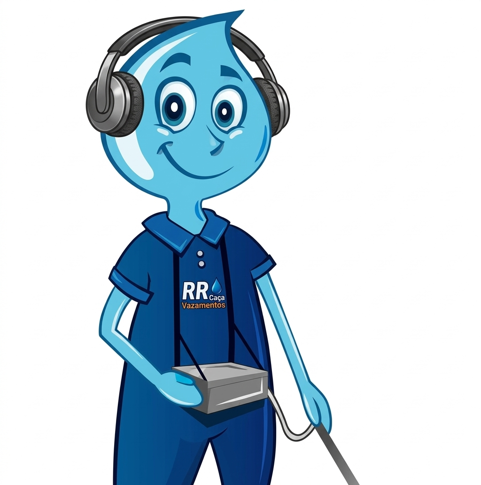
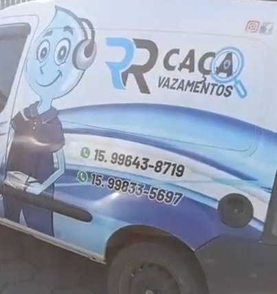

A RR Caça Vazamentos encontra o problema com rapidez, equipamentos modernos e sem reformas desnecessárias.

Localizamos vazamentos sem quebrar paredes e pisos.
Tecnologia para diagnósticos rápidos e precisos.
Resposta rápida para resolver o problema o quanto antes.
Evite desperdícios e reduza o valor da conta de água.

A RR Caça Vazamentos atende Itapetininga e região oferecendo serviços especializados para residências, empresas e instituições. Trabalhamos com equipamentos modernos para localizar vazamentos ocultos de forma rápida e precisa, evitando quebras desnecessárias.
Também realizamos serviços de encanamento em geral, válvulas hidráulicas, desentupimentos, limpeza de fossas, limpeza de caixas d'água, reparos hidráulicos e inspeção de tubulações.
Localização precisa sem quebradeiras desnecessárias.
Equipamentos modernos para identificar vazamentos ocultos.
Instalações, reparos e manutenção hidráulica.
Soluções rápidas para residências e empresas.
Serviço especializado e seguro.
Mais higiene e qualidade para sua água.